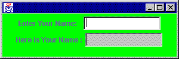
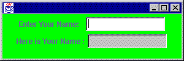
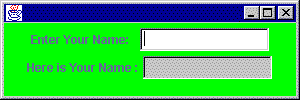

QUESTION 14:
 

(Review:) Insert a statement into the program that will set the background color to green.
See below:
setEditable() in UseAnyplace within the constructor would work. At the end looks like a nice place.
public class Repeater extends JFrame implements ActionListener
{
JLabel inLabel = new JLabel( "Enter Your Name: " ) ;
TextField inText = new TextField( 15 );
JLabel outLabel = new JLabel( "Here is Your Name :" ) ;
TextField outText = new TextField( 15 );
public Repeater() // constructor
{
getContentPane().setLayout( new FlowLayout() );
getContentPane().add( inLabel ) ;
getContentPane().add( inText ) ;
getContentPane().add( outLabel ) ;
getContentPane().add( outText ) ;
outText.setEditable( false );
inText.addActionListener( this );
}
. . . . . .
}
The background color of the frame is white. Say that you want the background color to be green.

(Review:) Insert a statement into the program that will set the background color to green.